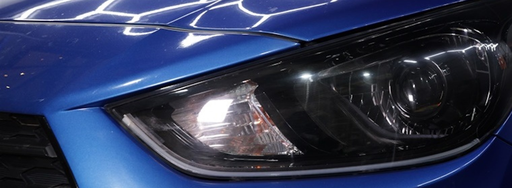
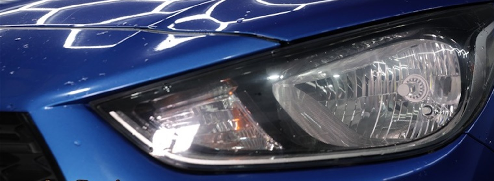

.jpg)
01
Тонировка
Визуальная приватность, комфорт в салоне и более собранный силуэт автомобиля.
Tula / premium automotive studio
Premium Detailing & Tuning Studio
Технологичный детейлинг, тюнинг, защита и дооснащение автомобиля в эстетике luxury performance. Без визуального шума, с точностью к деталям и контролем результата.
лет опыта в комплексном детейлинге и тюнинге
автомобилей прошли через студию и установочные посты
контроль качества перед выдачей автомобиля клиенту
Brand system
ART TUNING вырос из команды, которая с 2012 года занималась дооснащением автомобилей. Сегодня это студия, где автомобиль можно защитить, сделать тише, ярче, чище, безопаснее и визуально индивидуальнее.
Мы работаем с тонировкой, автозвуком, оптикой, защитными пленками, полировкой, керамикой, шумоизоляцией, химчисткой, сигнализациями, чехлами и дополнительным оборудованием.
Services
Визуальная приватность, комфорт в салоне и более собранный силуэт автомобиля.
.jpg)
Глубина цвета, удаление дефектов ЛКП и подготовка к защитным составам.

Глянцевый финиш, гидрофобный эффект и премиальная защита кузова.
.jpg)
Более тихий салон, плотное закрытие дверей и акустический комфорт.
.jpg)
Защита зон риска от сколов, реагентов и ежедневной дорожной нагрузки.
.jpg)
Bi-led линзы, восстановление оптики, улучшение света и новая световая графика.

Глубокая очистка интерьера, свежесть материалов и аккуратная детализация салона.

Комплексный уход за кузовом, салоном, стеклами, оптикой и защитными покрытиями.
Showcase


Один исходник разделен на два чистых кадра с общим crop 1520x560. Линии кузова, фара и перспектива совпадают, поэтому сравнение двигается плавно и без скачков.
 Тонировка
Тонировка Автозвук
Автозвук Чехлы
Чехлы.jpg) Detailing setup
Detailing setupYandex Maps
Актуальные оценки и комментарии лучше смотреть в живой карточке Яндекс Карт. На сайте оставлен premium-блок доверия и быстрый переход к независимому источнику.
Contact
Опишите задачу: пленка, керамика, тонировка, свет, звук, шумоизоляция, химчистка или комплексный проект.